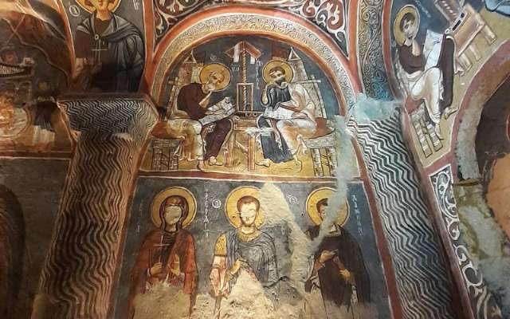

Peribacaları, kaya kiliseleri ve yeraltı şehirleri: Kapadokya'nın en etkileyici duraklarını iki güne sığdıran bir rota. İlk gün Göreme çevresindeki vadilere, ikinci gün yeraltı şehirlerine ve Ürgüp'e ayrılır.
Gün 1

Göreme Açık Hava Müzesi, Kapadokya'nın kalbinde, kayalara oyulmuş kiliseler, şapeller ve manastır yapılarından oluşan eşsiz bir topluluktur.

Karanlık Kilise, Göreme Açık Hava Müzesi içinde yer alan ve Kapadokya'nın en iyi korunmuş fresklerine sahip kilisesidir.

El Nazar Kilisesi, Göreme kasabasının yakınında, El Nazar vadisinde, koni biçimli bir peribacasının içine oyulmuş küçük ve zarif bir kilisedir.

Zelve ve Paşabağları, Kapadokya'nın en etkileyici peribacası manzaralarını sunan iki alandır.

Çavuşin, Göreme ile Avanos arasında, yamaca oyulmuş kaya evleriyle tanınan eski bir Kapadokya köyüdür.
Gün 2

Derinkuyu Yeraltı Şehri, Kapadokya'nın en derin ve en büyük yeraltı şehirlerinden biridir.

Kaymaklı Yeraltı Şehri, Nevşehir'in Kaymaklı kasabasında, Derinkuyu ile birlikte Kapadokya'nın en çok ziyaret edilen yeraltı şehirlerinden biridir.

Özkonak Yeraltı Şehri, Avanos'un kuzeyindeki Özkonak kasabasında yer alır.
Ürgüp Müzesi, Kapadokya'nın en canlı turizm merkezlerinden Ürgüp'te, bölgenin arkeolojik ve etnografik mirasını tanıtan bir müzedir.

Nevşehir Müzesi, Kapadokya bölgesinin tarih öncesinden Osmanlı dönemine uzanan geçmişini tanıtan modern bir müzedir.
Gezinizi planlamanıza yardımcı olacak, gün gün düzenlenmiş hazır rotalar. Süreler yaklaşık değerlerdir; ziyaret saatlerini ve yol koşullarını yola çıkmadan önce kontrol edin.